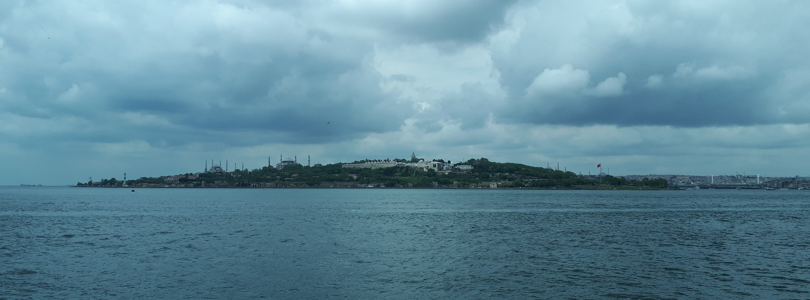

These are weekly meetings to be held on Fridays at Feza Gursey Institute located in the Kandilli campus of Bogazici University in coordination with Bogazici University Math Department located in the Guney campus of Bogazici University. Our goal is to foster communication between geometers and mathematically minded theoretical physicists. Each meeting will have an informal introductory component as well as a formal research talk.
Time and Location
Abstract
Date - Speaker - Title
Organizational committee : Nihat Sadik Deger, Umut Varolgunes
These events are partially supported by TUBITAK grant number 121C034.